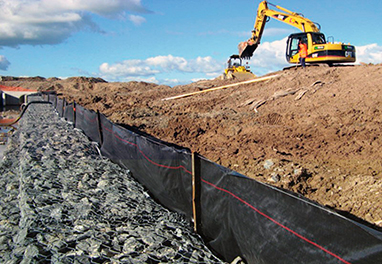
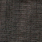

Silt Fence Products
Contractor Grade Silt Fence | Ministry of Transportation (MTO) Silt Fence. | Wire-Backed Silt Fence
Use Silt Fence for perimeter control. Placed below areas where sheet flows discharge from the site. Silt fence should also be used as interior controls below disturbed areas where runoff may occur.
Silt Fence fabric can be contractor grade light duty or heavy duty MTO quality of fabric. The fabric is attached to 2" X 2" premium grade stakes with 1" wide 1" long staples. Rolls can be either 11 or 14 - 4' stakes per roll. Heavy duty MTO silt fence has fabric with plastic mesh attached to 16 - 5' stakes per roll.
Welded wire silt fence is used where a strong product is required. Wire is 14 gage, 36" high with a 2" X 4" opening. Fibre is "C" ringed to top and ends of 100' rolls. Fabric can be either 36" or 45" wide.
Page Wire — used for perimeter site location. Our non-woven geotextile can be field attached for erosion to debris control.
Contractor Grade Silt Fence
- SF11 Light Duty Silt Fence — 3' x 100' [11 – 4' stakes]
- SF13 Light Duty Silt Fence — 3' x 100' [13 – 4' stakes]
- SF14 Standard Duty Silt Fence — 3' x 100' [14 – 4' stakes]
- Standard black fabric. Orange silt fence fabrics are also available (extra lead time).
- Custom silt fence stencilling of corporate identity logo, business name, phone number available
MTO (Ontario Ministry of Transportation) Silt Fence
- BW Geotextiles silt fence products are approved by The Road Authority
- MTO Light-Duty Silt Fence OPSD219.110 3' x 98' 6" [14 – 4' stakes]
- MTO Heavy-Duty Silt Fence OPSD219.130 3' x 98' 6"; includes mesh reinforcement [16 – 5' stakes]
- Standard black fabric.
- Custom silt fence stencilling of corporate identity logo, business name, phone number available
Wire-Backed Silt Fence
- 14 gauge wire 36" high with 48" silt fence fabric
- 14 gauge wire 48" high with 48" silt fence fabric
- 14 gauge wire 36" high with 60" silt fence fabric
- 14 gauge wire 48" high with 60" silt fence fabric
- Standard black fabric.
- Custom silt fence stencilling of corporate identity logo, business name, phone number available
Contractor Grade Customiztion
Contractor grade silt fences can be made with your choice of three (3) different fabrics. You can customize the number of stakes/roll of silt fence.
Silt Fence Fabric Weights
The three most used silt fence fabric weights are:
55 grams/m sq. This is an excellent option for budget-conscious projects.
77 grams/m sq. Offers the best value. It lasts longer and stencilling is bolder and wears longer.
100 grams/m sq. Approved by MTO. This product is master standing offer list at The Road Authority.